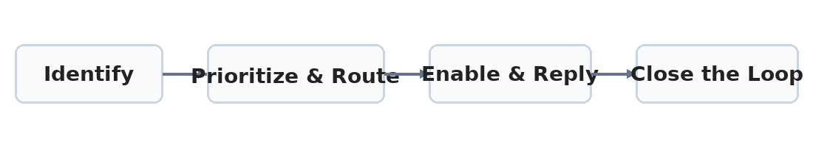

Triage Playbook
The flow below represents the high-level stages of support triage.
- Identify: Categorize the ticket (e.g., navigation, editor, attachments, downtime).
- Prioritize: Mark urgent cases (HOT tickets, enterprise impact).
- Route: Assign to the correct segment or product team.
- Enable: Share ready-to-use resources or helper bot responses.
- Close the loop: Follow up, confirm resolution, document lessons learned.